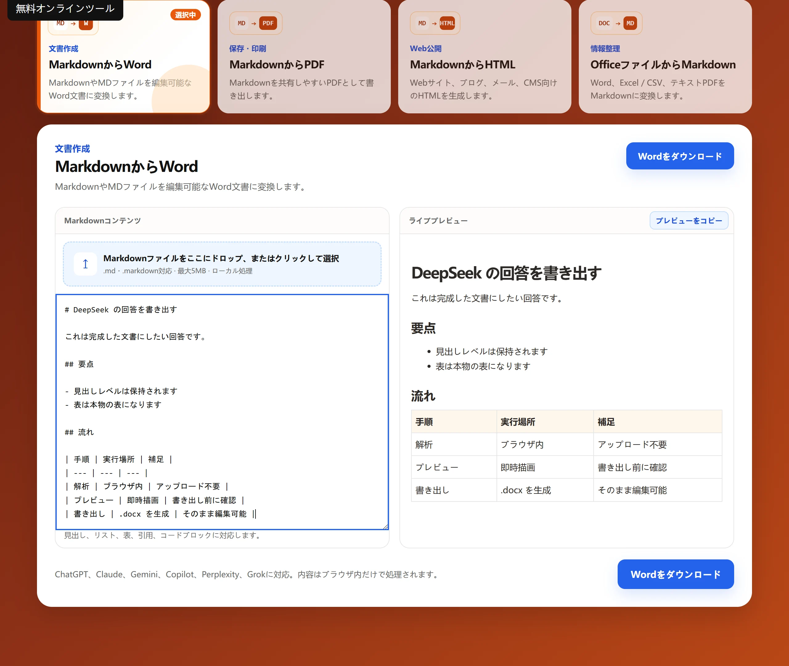

コンテンツを貼り付けるかアップロード
DeepSeek や ChatGPT、Claude が生成した Markdown をそのまま貼り付けられます。
無料オンラインツール
AI生成Markdownを整った編集可能なWord文書に変換します。 変換はブラウザ内で実行され、コンテンツはアップロードされません。

使い方
DeepSeek や ChatGPT、Claude が生成した Markdown をそのまま貼り付けられます。
見出し・リスト・表・コードブロックが右側のプレビューにすぐ反映されます。
DOCX ファイルをブラウザから直接ダウンロードできます。
よくある質問
基本機能は無料で、アカウント登録も不要です。内容がブラウザの外に送信されることはありません。
できます。回答を入力欄に貼り付けると、見出し・リスト・表がそのまま保たれます。
いいえ。基本機能はアカウントなしで利用できます。
見出し・段落・リスト・表・引用・コードブロックに対応しています。
活用場面
変更履歴とコメントは編集可能な文書にしか存在しません。
出力した見出しとリストは、Word テンプレートのスタイルを引き継ぎます。
ダウンロード後に表紙やヘッダーを当てはめられます。
制限
構造は保持しますが、コピー元の AI サービスの見た目は再現しません。
LaTeX はテキストのまま残ります。編集可能な数式にするには入力し直してください。
自社のスタイル適用はダウンロード後の手作業になります。
ほかのツール